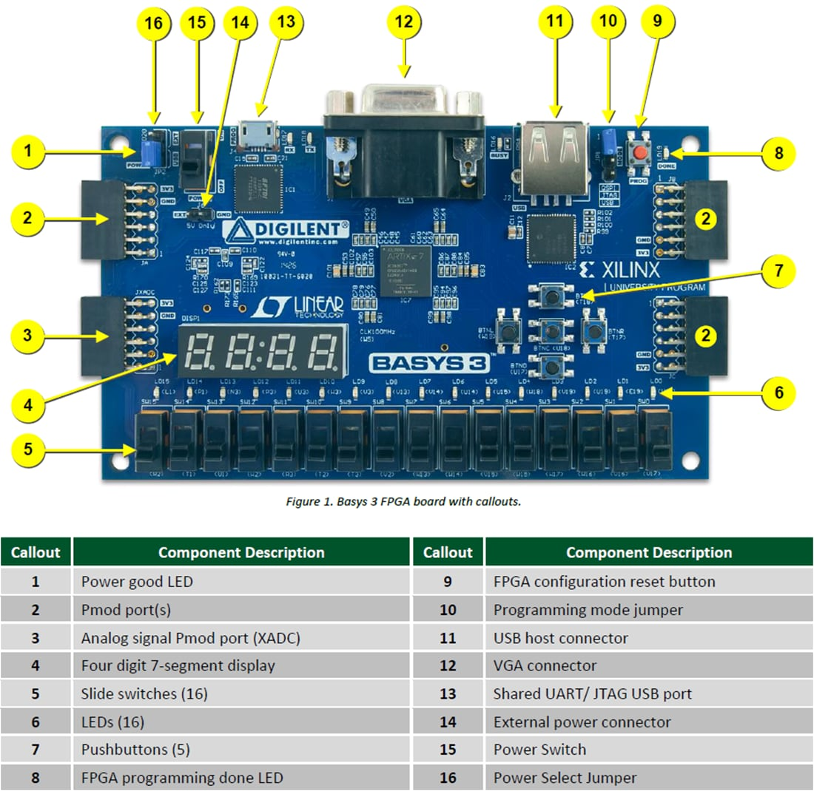
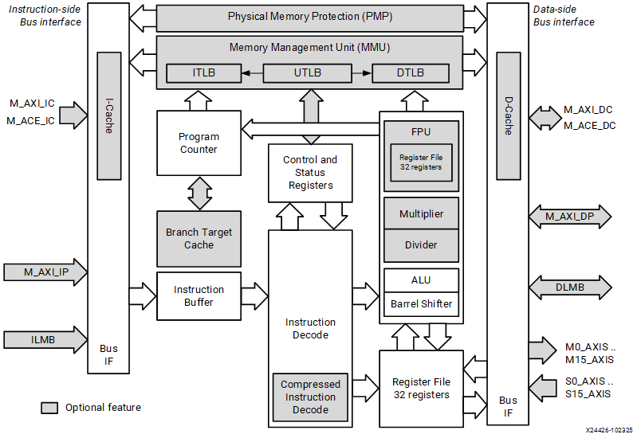

MicroBlaze V를 FPGA 내부에 구성한다.
00이 장의 목표
Basys3의 Artix-7 FPGA 내부에 MicroBlaze V(마이크로블레이즈 브이) CPU와 Local BRAM을 구성하고, Local BRAM과 Debug 구성요소를 자동 생성한다. 보드 Clock·Reset의 외부 연결과 Bitstream 생성은 02장에서 완료한다.
- Basys3
- MicroBlaze V
- BRAM
- LMB
- IP Integrator
CPUFPGA Fabric에 구현되는 MicroBlaze V를 사용한다.
MemoryILMB/DLMB를 통해 공통 Block RAM에 접근한다.
완료 기준MicroBlaze V · Local BRAM 계층 생성과 Block Design 저장까지 확인한다. 외부 Clock/Reset 연결 및 첫 Validate는 SoC 02에서 진행한다.
01최소 SoC 구성 범위
SoC 01은 이후 확장의 기준이 되는 MicroBlaze V · Local BRAM IP 기본 구성을 생성하고 저장한다. Clock/Reset의 외부 연결과 빌드는 SoC 02에서 완료하며, GPIO·UART·Timer·Interrupt·Custom AXI IP·NPU는 포함하지 않는다.
명령과 데이터를 저장할 BRAM을 붙인다.
자동 생성된 Clock/Reset IP와 내부 연결을 확인한다. Basys3 외부 입력 포트 연결은 SoC 02에서 완료한다.
Local Memory 16 KB 구성과 Block Design 저장을 확인한다. Validate 및 후속 빌드는 SoC 02 연결 이후 진행한다.
MicroBlaze V는 RISC-V(리스크-파이브, 개방형 명령어 집합) 계열의 소프트 CPU다. 이 프로젝트에서 확인된 CPU 인스턴스는
microblaze_riscv_0이다.MicroBlaze V → ILMB(명령어) / DLMB(데이터) → Local BRAM 16 KiB · 외부 Clock/Reset은 02장에서 연결
02Basys3 하드웨어 기준
Basys3는 Artix-7 XC7A35T-1CPG236C를 사용하며, 보드에는 100 MHz 단일 Oscillator가 있다. Digilent Reference Manual은 이 Clock이 FPGA의 W5 핀에 연결되어 있음을 명시한다.

| 항목 | Basys3 기준 | SoC 01에서의 사용 |
|---|---|---|
| FPGA | XC7A35T-1CPG236C | MicroBlaze V·BRAM·Clock/Reset IP가 모두 이 FPGA 내부에 구현된다. |
| 기준 Clock | 100 MHz | Clocking Wizard 입력 |
| Clock Pin | W5 | Top/BD 외부 Clock 포트와 XDC 연결 |
| Reset 입력 | Center Button BTNC, pin U18 | 실습용 외부 Reset으로 사용 |
| BRAM 자원 | 1,800 Kbits | 초기 Local Memory 16 KB 구성에 충분한 온칩 자원 |
100 MHz → T = 1/f → 10 ns / cycle
Local Memory는 외부 DDR이 아니라 FPGA 내부 Block RAM을 사용한다. Basys3의 SPI Flash는 FPGA Configuration 저장장치이며 MicroBlaze V Local BRAM과 역할이 다르다.
03MicroBlaze V 내부 구조
MicroBlaze V는 AMD FPGA에 구현하도록 설계된 RISC Soft Processor이다. 내부에는 Program Counter, Instruction Decode, Register File, ALU 등이 있고 양쪽에 Instruction-side/Data-side bus interface가 있다.

PC → Instruction-side Bus → ILMB → BRAM → Instruction Fetch
Load/Store → Data-side Bus → DLMB → BRAM → Data Read/Write
핵심은 “CPU가 BRAM 하나를 쓴다”에서 끝내지 않고, 명령어 Fetch 경로와 Data Load/Store 경로가 논리적으로 분리되어 있다는 것을 Block Design에서 확인하는 것이다.
04ILMB · DLMB · BRAM 관계
LMB(Local Memory Bus)는 FPGA 내부 Block RAM에 빠르게 접근하기 위한 간결한 Local Bus이다. AMD UG1711는 Instruction LMB와 Data LMB가 각각 LMB BRAM Interface Controller를 통해 공통 Block RAM에 연결되는 구성을 일반적인 MicroBlaze V Local Memory 구조로 설명한다.
| 경로 | 버스와 컨트롤러 | 도착점 |
|---|---|---|
| microblaze_riscv_0 / ILMB | ilmb_v10 → lmb_bram_if_cntlr | 공통 Block Memory Generator |
| microblaze_riscv_0 / DLMB | dlmb_v10 → lmb_bram_if_cntlr | 공통 Block Memory Generator |
| 인터페이스 | 주 역할 | 실행 관점 |
|---|---|---|
| ILMB | Instruction Local Memory Bus | PC가 가리키는 명령어 Fetch |
| DLMB | Data Local Memory Bus | 변수·Stack·Data Load/Store |
| BRAM | Program + Data Local Memory | 초기 Bare-metal 실행 저장공간 |
MicroBlaze V의 Vector Base Address는 일반적으로 Local Memory의
0x00000000을 기준으로 사용한다. 실제 프로그램 배치와 linker 영역은 SoC 03의 Software 실행 단계에서 확인한다.05Vivado 프로젝트 생성 · 2024.2
~/soc는 Ubuntu에서 각 사용자 홈 폴더 아래의 soc 폴더를 의미합니다. Vivado의 폴더 선택 창에서는 Home → soc → hw를 찾아 선택합니다.
기존 성공 프로젝트를 삭제하거나 덮어쓰지 않는다.
01 · Create Project
Quick Start → Create Project → Next. Project name은
soc01_microblaze_bram, Project location은~/soc/hw를 입력한다.02 · RTL Project
RTL Project와 Do not specify sources at this time을 선택하고 Next.
03 · Parts 탭
Parts 탭에서
xc7a35tcpg236-1을 찾아 해당 행을 선택한다. Next → Finish. 이 실습에서는 자동 Board 인터페이스 선택으로 작업 순서가 달라지지 않도록 Parts 기준을 사용한다.04 · 결과 확인
Project Settings → General의 Part가
xc7a35tcpg236-1인지 확인한다. Sources에 아직 RTL 파일이 없어도 정상이다.
프로젝트 파일:
~/soc/hw/soc01_microblaze_bram/soc01_microblaze_bram.xpr. 이 단계는 하드웨어 설정 파일만 만든 것이며 FPGA 실행은 아직 아니다.06Block Design 생성
01 · 메뉴 선택
Flow Navigator → IP INTEGRATOR → Create Block Design을 누른다.
02 · 설정
Design name에
soc01_mb_bram을 입력하고 Directory는<Local to Project>로 둔다. OK.03 · 화면 확인
중앙에 빈 Diagram이 열리고 Sources → Design Sources에
soc01_mb_bram.bd가 보인다.
soc01_microblaze_bram.xpr → Create Block Design → soc01_mb_bram.bd
07MicroBlaze V IP 추가
01 · Add IP
Diagram에서 +(Add IP)를 누르고
MicroBlaze V를 검색한 다음 MicroBlaze V를 더블클릭한다. 구형MicroBlazeIP가 아니다.02 · CPU 이름 확인
Diagram에
microblaze_riscv_0블록이 생성된다. 인스턴스 번호는 실제 프로젝트 화면을 우선한다.03 · 다음 조작 확인
Diagram 위쪽에 Run Block Automation 링크가 보이는지 확인한다.
왜 자동 구성이 필요한가? CPU만 추가했을 때는 실행할 명령어를 담는 Local BRAM과 그 연결이 아직 완성되지 않았다. Block Automation(블록 오토메이션, 자동 구성)이 메모리·Debug·Clock·Reset 기본 블록을 생성한다.
M_AXI_DP는 06장 주변장치 연결 전까지 사용하지 않는다.08Run Block Automation — 최소 시스템 자동 구성
MicroBlaze V를 추가하면 Designer Assistance가 활성화된다. Run Block Automation을 실행한다.

위 그림은 AMD UG1711 2026.1 아래 표의 학습용 설정값을 기준으로 2024.2 화면에서 항목을 확인한다.
Vivado 2024.2 설정값
| 항목 | 설정 | 이유 |
|---|---|---|
| Preset | None | 자동 고성능 구성이 아니라 최소 구조를 직접 확인한다. |
| Local Memory | 16 KB | 초기 Bare-metal 실습에 충분하며 구조 확인이 쉽다. |
| Local Memory ECC | None | 첫 단계에서 ECC 복잡도를 제외한다. |
| Cache Configuration | None | Local BRAM 동작을 먼저 이해한다. |
| Debug Module | Debug Enabled | 후속 Vitis/JTAG Debug를 위해 MDM V을 유지한다. |
| Peripheral AXI Port | Enabled | SoC 06 이후 AXI Peripheral 확장을 위해 유지하며, SoC 01에서는 연결하지 않는다. |
| Interrupt Controller | Off | Interrupt는 후속 장에서 별도로 추가한다. |
| Clock Connection | New Clocking Wizard | Basys3 100 MHz 기준 Clock을 시스템 Clock으로 만든다. |
각 값을 확인한 뒤 OK . 특히
Local Memory = 16 KB를 확인한다. GUI의 Preset·ISA 선택 상태는 실제 2024.2 화면에 표시된 내용을 우선한다.09Block Automation 이후 구조

위 그림도 AMD UG1711 2026.1
설정 창을 닫은 뒤 Vivado Diagram에서 자동 생성 구조를 확인한다.
| 구성 | 연결 |
|---|---|
| clk_wiz_* / Clocking Wizard | clk_out1 → 시스템 클록 |
| microblaze_riscv_0 + Local Memory | ILMB → Local Memory / DLMB → Local Memory |
| proc_sys_reset / Processor System Reset | mb_reset → MicroBlaze V / bus_struct_reset → Bus |
| AXI 리셋 | peripheral_aresetn / interconnect_aresetn → AXI 계층 |
| mdm_* / MicroBlaze Debug Module V | DEBUG 인터페이스 |
Local Memory Hierarchy를 펼쳐서 확인
microblaze_riscv_0_local_memory와 같은 Hierarchical Block을 열어 ILMB Controller, DLMB Controller, Block Memory Generator가 실제로 존재하는지 확인한다.
완료 확인:
ILMB와 DLMB가 Local BRAM으로 연결되는지 계층 내부를 펼쳐 확인한다. 04장에서 확인한 BRAM 범위는 0x00000000~0x00003FFF(16 KiB)다. M_AXI_DP에는 아직 AXI 주변장치가 연결되지 않는다.10Clock · Reset 기본 블록 확인
Block Automation이 만든 Clocking Wizard(클로킹 위저드, 클록 생성·관리 IP)와 Processor System Reset(프로세서 시스템 리셋, 초기화 제어 IP)이 Diagram에 있는지 확인한다.
| 01장 확인 대상 | 역할 | 02장 작업 |
|---|---|---|
clk_wiz_* | CPU 동작 클록 공급 | Basys3 W5 100 MHz 입력 연결 |
rst_clk_wiz_* | CPU·버스 리셋 순서 제어 | U18 리셋, 극성, locked 연결 |
mdm_* | MicroBlaze V Debug 연결 | 03장에서 Vitis 디버그 실행 |
01장에서는 위 IP가 생성됐는지만 확인한다. 외부 포트 설정, 클록 주파수 상세 설정, Reset 배선, Validate Design은 02장에서 수행한다.
11Basys3 XDC — 02장에서 사용할 핀 확인
Digilent 공식 Basys-3-Master.xdc를 Vivado Add Sources → Add or create constraints → Add Files로 등록한다. Clock과 Center Button Reset의 핀 번호를 확인한다. 실제 외부 포트 생성과 XDC 제약의 유효성 확인은 02장에서 완료한다.
## Clock signal
set_property -dict { PACKAGE_PIN W5 IOSTANDARD LVCMOS33 } [get_ports clk]
create_clock -name sys_clk_pin -period 10.00 -waveform {0 5} [get_ports clk]
## Center Button : Reset
set_property -dict { PACKAGE_PIN U18 IOSTANDARD LVCMOS33 } [get_ports btnC]| XDC | 의미 | 확인 |
|---|---|---|
PACKAGE_PIN W5 | Basys3 100 MHz oscillator | Reference Manual의 Oscillators/Clocks 절과 일치 |
period 10.00 | 100 MHz의 1주기 = 10 ns | Timing Engine에 Primary Clock 정의 |
PACKAGE_PIN U18 | Center Push Button | Digilent Master XDC의 btnC |
XDC 파일에서는 사용할 W5 / U18 줄만 활성화한다. Digilent 예제의
create_clock -add 대신 이 프로젝트에서 후속 -add 없는 명령을 표시했다. 01장에서는 아직 BD 외부 포트를 만들지 않으므로 Validate Design을 실행하지 않는다. Block Design에서 생성된 외부 포트 이름이 clk_0, reset_0처럼 되어 있다면 XDC를 억지로 바꾸기 전에 포트 이름을 먼저 의도한 이름으로 정리한다. HDL/BD 포트명 ↔ XDC get_ports 이름이 정확히 같아야 한다.12Diagram 저장 · 구성 확인
01 · 저장
Diagram 탭의
soc01_mb_bram에서 Ctrl+S.02 · Local Memory 계층 확인
microblaze_riscv_0_local_memory계층 블록을 펼쳐ILMB컨트롤러,DLMB컨트롤러, Block Memory Generator가 있는지 확인한다.03 · IP 확인
CPU, Local Memory, Debug Module, Clocking Wizard, Processor System Reset이 생성되어 있는지 확인한다. GPIO/UART IP는 아직 추가하지 않는다.
04 · 프로젝트 파일 확인
Sources → Design Sources에
soc01_mb_bram.bd가 보이면 저장 완료다.
01장 완료 기준: CPU와 16 KiB BRAM이 포함된 Block Design 저장. 02장에서는 이 프로젝트를 이어서 Clock·Reset·XDC·Bitstream을 처리한다. 01장에서 Bitstream·C 프로그램 성공을 선언하지 않는다.
13SoC 01 완료 확인
- Target이 Basys3의
XC7A35T-1CPG236C이다. soc01_mb_bram.bd가 생성되었다.- MicroBlaze V와 MDM V가 존재한다.
- Local Memory 16 KB, ECC None, Cache None이다.
- ILMB와 DLMB가 Local BRAM으로 연결된다.
- MDM V Debug Module이 연결된다.
- Clocking Wizard와 Processor System Reset IP가 생성되어 있다.
- Basys-3-Master.xdc를 Constraints에 등록하고 W5 / U18 / 10 ns 기준을 확인한다. 외부 포트 연결과 제약 확인은 02장에서 한다.
soc01_mb_bram.bd를 저장했다.- 아직 GPIO/UART/Timer/Interrupt/NPU를 추가하지 않았다.
SoC 01 완료 → SoC 02 Clock / Reset 구조 → SoC 03 BRAM 프로그램 실행 → SoC 04 Memory Map → SoC 05 AXI
14참고 문서
| 문서 | 확인 항목 |
|---|---|
| AMD UG1711 · MicroBlaze V Processor Embedded Design User Guide · 2024.2 | MicroBlaze V 기본 구조, Local Memory Bus, Block Automation 설정, Clock/Reset 연결 흐름 |
| AMD UG994 · Designing IP Subsystems Using IP Integrator · 2024.2 | IP Integrator, Designer Assistance, Run Block Automation, Validate Design, HDL Wrapper |
| AMD UG1629 · MicroBlaze V Processor Reference Guide · 2024.2 | MicroBlaze V Processor Architecture와 Register/Address 구조의 심화 기준 |
| AMD PG164 · Processor System Reset | External/Aux Reset polarity, Reset synchronization과 sequencing |
| Digilent Basys 3 Reference Manual | Artix-7 device, 100 MHz oscillator, W5 Clock pin, 보드 I/O |
| Digilent Basys-3-Master.xdc | W5 Clock, 10 ns constraint, U18 Center Button pin 기준 |